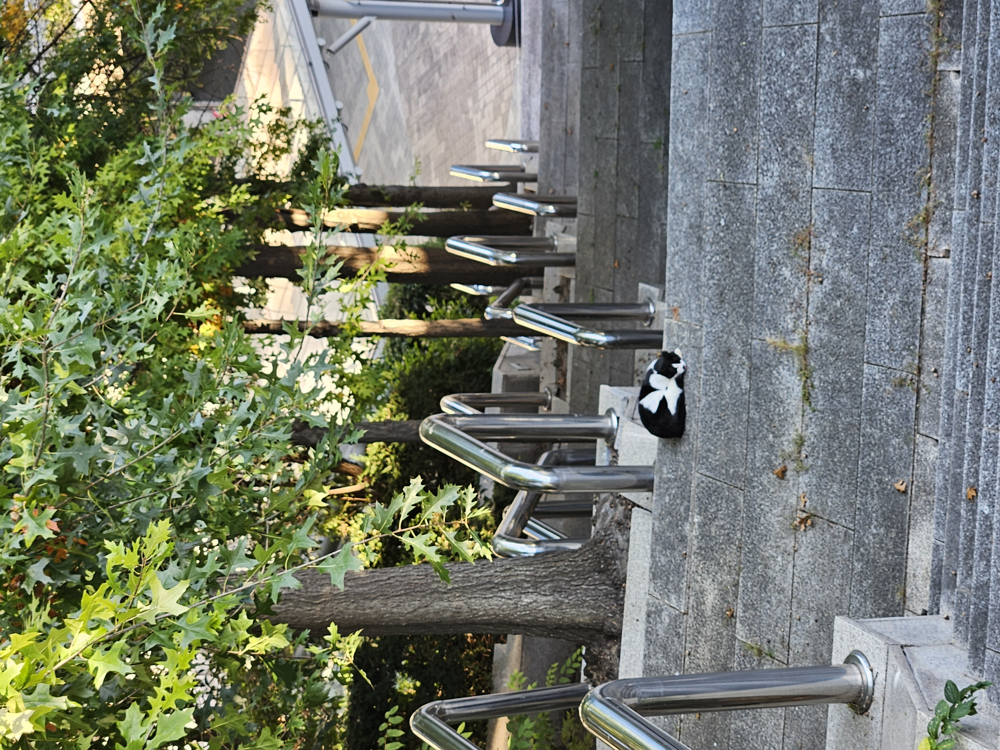
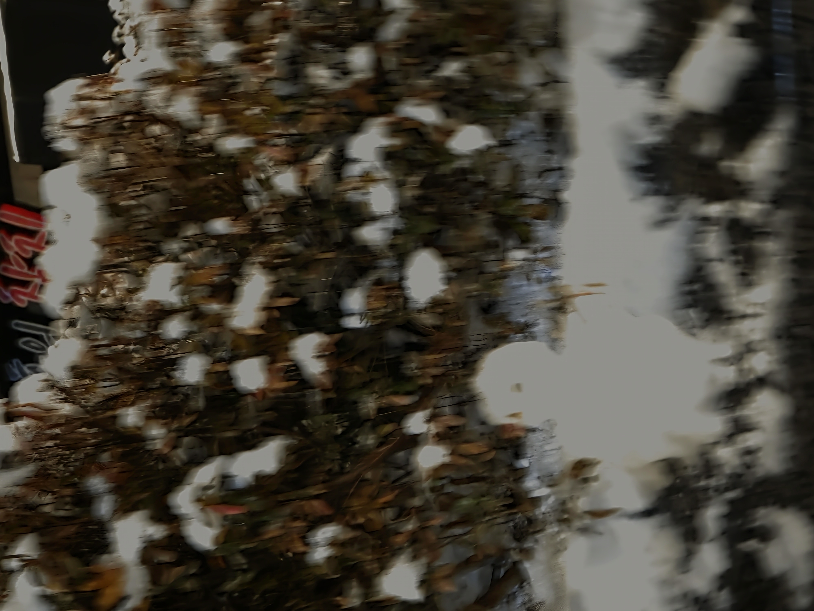
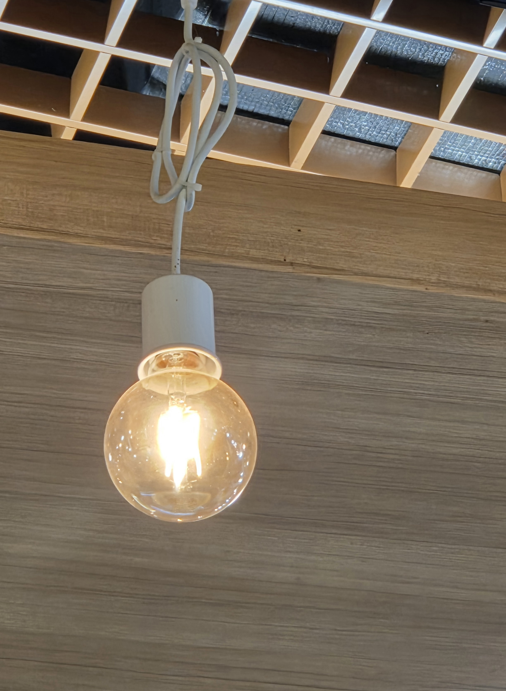
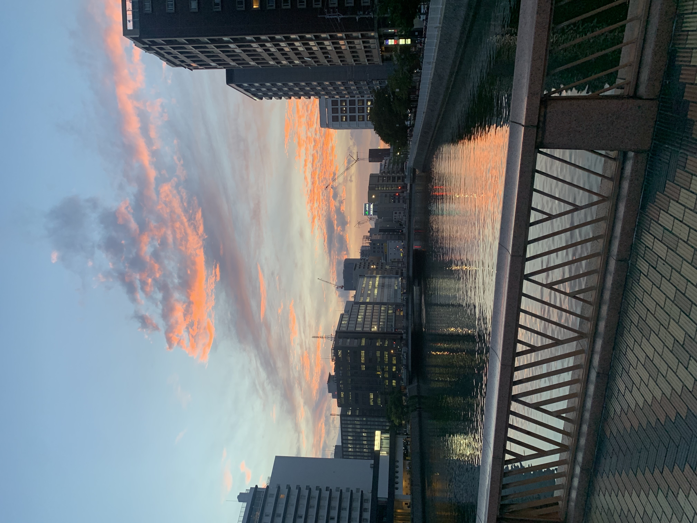
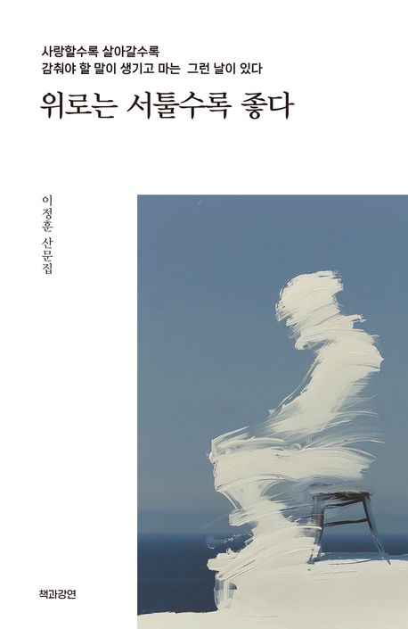

Butterfly
그냥 보고 느껴
내가 자처한 모든 순간의 고통을 나는 사랑할 것이다.
안녕하세요, 매일 통학에 편도 2시간씩 소모하는 티온입니다.
매일 통학시간에 휴식겸 책읽기를 목표로 하고있습니다.
제가 지금 읽고 있는책은
『위로는 서툴수록 좋다』
입니다. 오늘 오는길에 다 읽었네요 ㅎㅎ.
엄마와 군대 이야기가 나오는 파트는 정말 눈물이 나오는데요.
출근길에 펑펑 울었습니다.... 정말 곤란 했죠
| 이름 | 티온 |
|---|---|
| MBTI | INTJ |
| 취미 | 클라이밍, 책읽기, 소설보기 |
| 좋아하는 요리 | 면요리, 간장베이스 깔끔한 국물, 희옥짱짱맨 |
기억의 소용돌이






그냥 보고 느껴

나를 돌아보고 이해하고자 하는 책
오늘 새롭게 배운 것들을 기록합니다.
header, nav, main, section, article, footer 등 시멘틱 태그의 역할과 사용법을 배웠다.